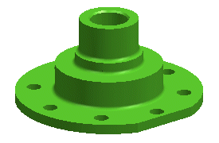
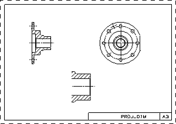
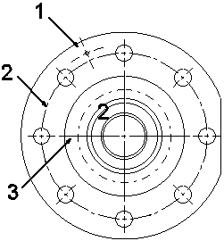
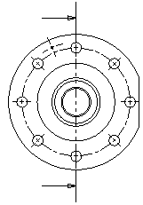
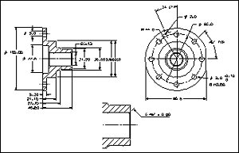

Open drf6_project_dim_dwg and start the Drafting application.

Drawing sheet SH1 is displayed.

The TOP view has three centerline symbols to help you with your dimensioning.

Normally there would be a section arrow in the TOP view to show where the cutting plane is located. However, the section line display has been turned off for this view so that it will not interfere with your dimensioning.

Use the Annotation Preferences dialog box to set up the preferences you need:
Show all values in millimeters.
Display trailing zeros for all dimension and tolerance values.
Allow dimension values to be placed anywhere, and the arrows positioned inside the extension lines.
Use one decimal place accuracy.
